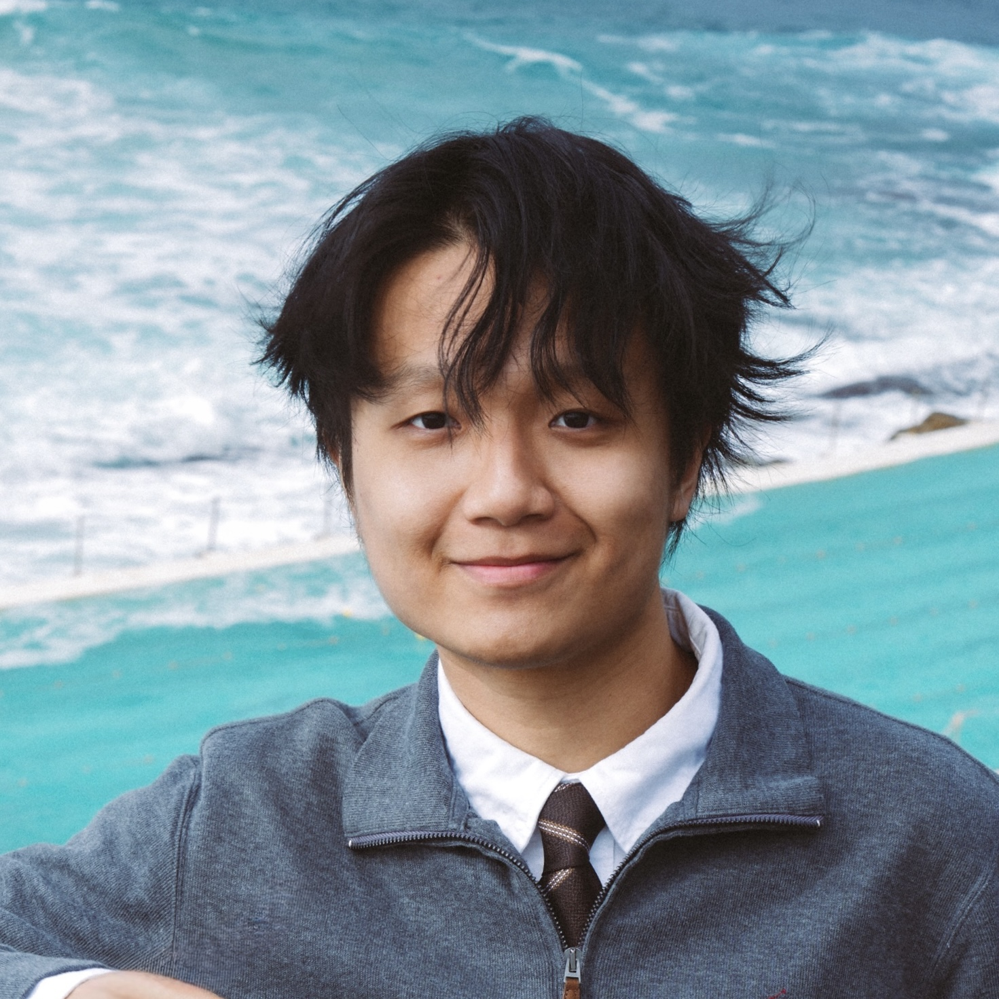

RSS DEX-Manip Workshop · 2026

About
I am a second-year M.S. student in Mechanical Engineering at Carnegie Mellon University, advised by Prof. Changliu Liu. Previously, I was a visiting student at UC Berkeley, working with Prof. Masayoshi Tomizuka. I received my B.E. in Mechanical Engineering from Xi'an Jiaotong University, advised by Prof. Qiji Ze.
My research focuses on building robot learning systems that adapt and improve beyond their initial training. I am particularly interested in how robots can predict the long-term consequences of their behavior and use these predictions to evaluate, steer, and efficiently improve pretrained policies for complex real-world tasks.
Publication
Education
Carnegie Mellon University
M.S. in Mechanical Engineering
University of California, Berkeley
Visiting Student

Xi'an Jiaotong University
B.E. in Mechanical Engineering